Miscellanea
Tastiera Personalizzata con Caporali - MacOS
1 luglio 2020
⌨️ Come personalizzare la propria tastiera per poter inserire le caporali? Semplice: mappandola.
Ogni editore ha le sue preferenze quando si tratta di formattazione dei dialoghi.
Tuttavia questo non ci proibisce di scrivere con le nostre regole editoriali, purché siano coerenti con l'intero documento. Io, per esempio, non posso fare a meno delle virgolette basse doppie, dette anche caporali (« »), uno dei formati più usati in Italia per i dialoghi.
Se siete arrivati a questo articolo è perché davvero non ne potete più di inserire interminabili combinazioni di tasti solo per avere un simboletto ottenibile con una singola battuta.
Voglio quindi condividere un comodissimo sistema per avere le caporali (o qualunque altro simbolo di punteggiatura vogliate applicare) sempre a portata di mano.
🌋 Step 1: Installazione di Ukelele
- Scarica l’ultima versione di Ukelele
- Installa Ukelele trascinandolo nella cartella Applicazioni
- Apri Ukelele.
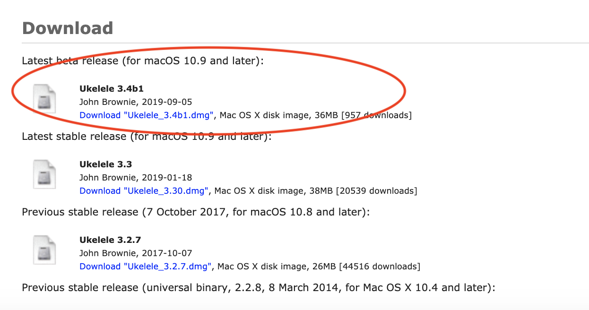
⌨️ Step 2: Creare una tastiera personalizzata
- Clicca su File → New From Current Input Source
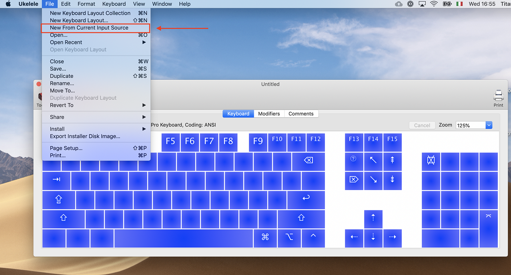
2. Appare una finestra con la copia della tastiera attuale.
3. Modifica il nome del file. In alto, fai doppio click sulla scritta “Untitled” e rinominalo a piacere.
Io l’ho chiamata «ITA».
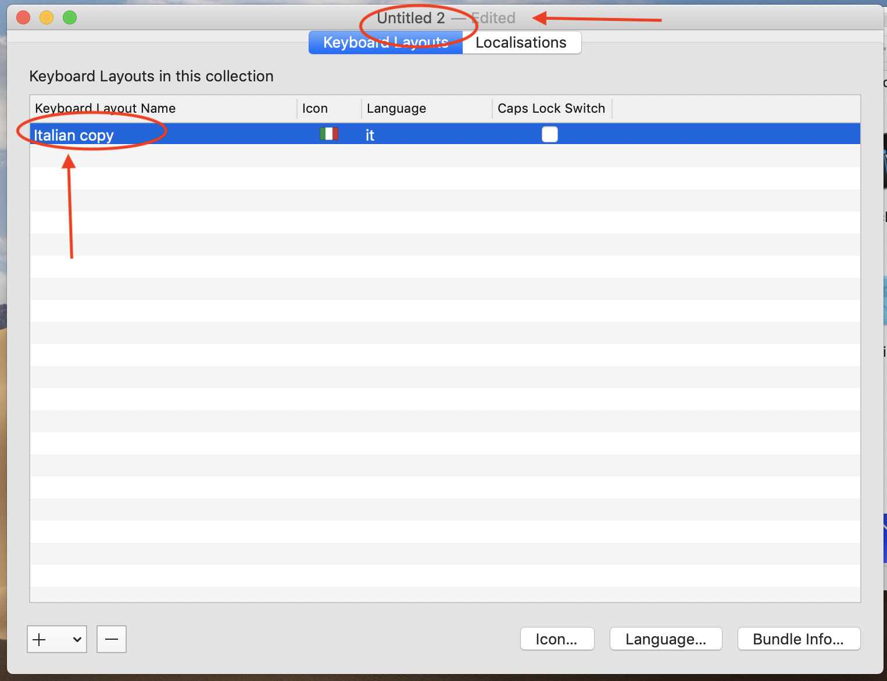
4. Cliccare sul nome della tastiera con il click secondario (tasto destro) e scegliere “Set Keyboard Name and Script”.
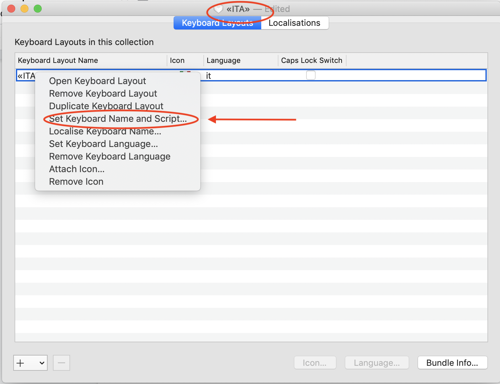
- Rinomina a piacere
- Scegli lo script “Unicode”.
- Ok
⌨️ Step 3: Modificare la tastiera.
- Apri la nuova tastiera cliccando due volte sul nome oppure “Click secondario → Open Keyboard Layout”.
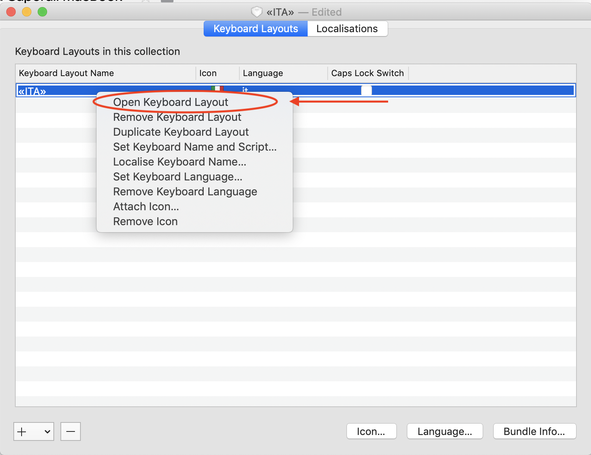
2. Nella tastiera virtuale che si è appena aperta, scegli il tasto che vuoi trasformare. Nel mio caso è il tasto “<”, che ho sempre usato al posto delle vere e proprie caporali per fare più in fretta.
4. Doppio click sul tasto prescelto.
5. Compare una finestrella con un codice. Cancellalo e inserisci il simbolo « (Sulla tastiera premi “option+1”).
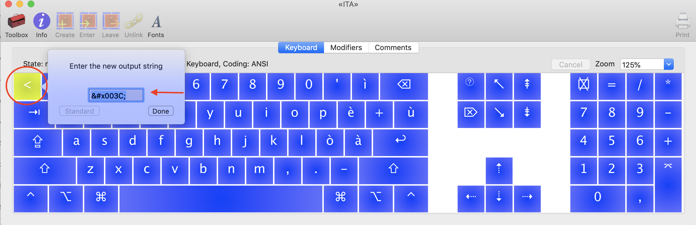
5. Clicca “Done”.
6. Ora vogliamo impostare la caporale destra.
7. Seleziona lo stesso tasto, tieni premuto “shift” e cambia il codice aggiungendo » (Sulla tastiera premi “option+shift+1”).
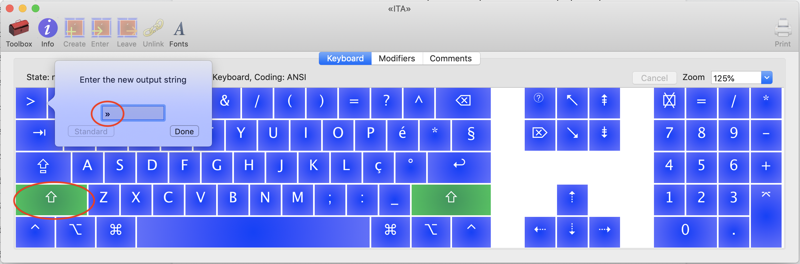
8. Salva il file in formato “Keyboard Layout Bundle”. “File → Save”
⌨️ Step 4: Installazione della tastiera
- Vai nella cartella dove hai salvato il file
- Trova il “bundle” con il nome della tua tastiera
- Doppio click sul file
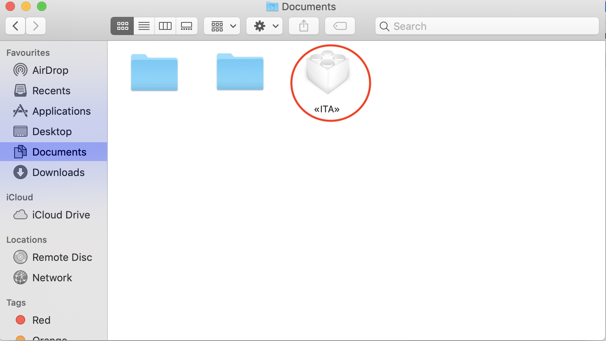
4. Scegli se installare per un solo utente o per tutti.
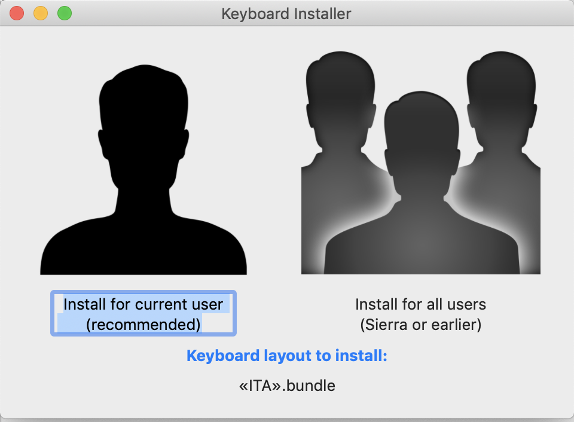
⌨️ Step 5: Attivazione della tastiera
- Vai su Preferenze di Sistema
- Tastiere
- Input Source
- Clicca +
- Scegli Italiano
- Nella finestra sulla destra seleziona la tua nuova tastiera
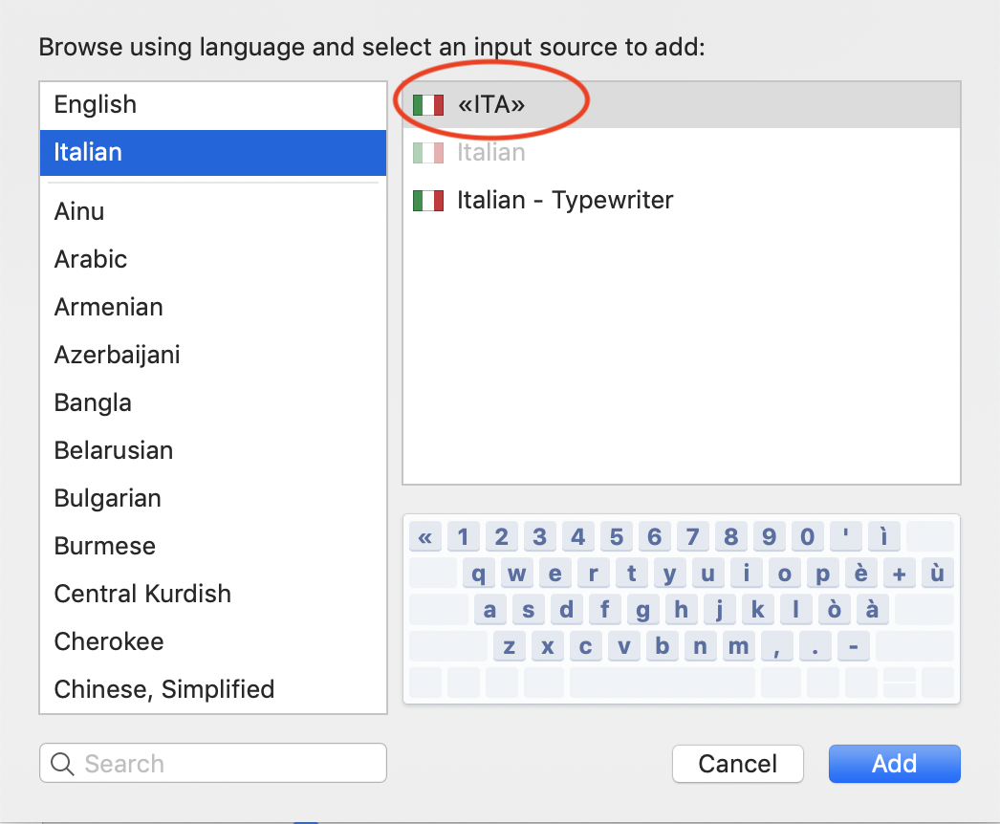
7. Clicca “Add”.
8. Ora la tastiera dovrebbe essere visibile nella colonna a sinistra.
9. Assicurati che la casella “Show input in menu bar” sia spuntata.
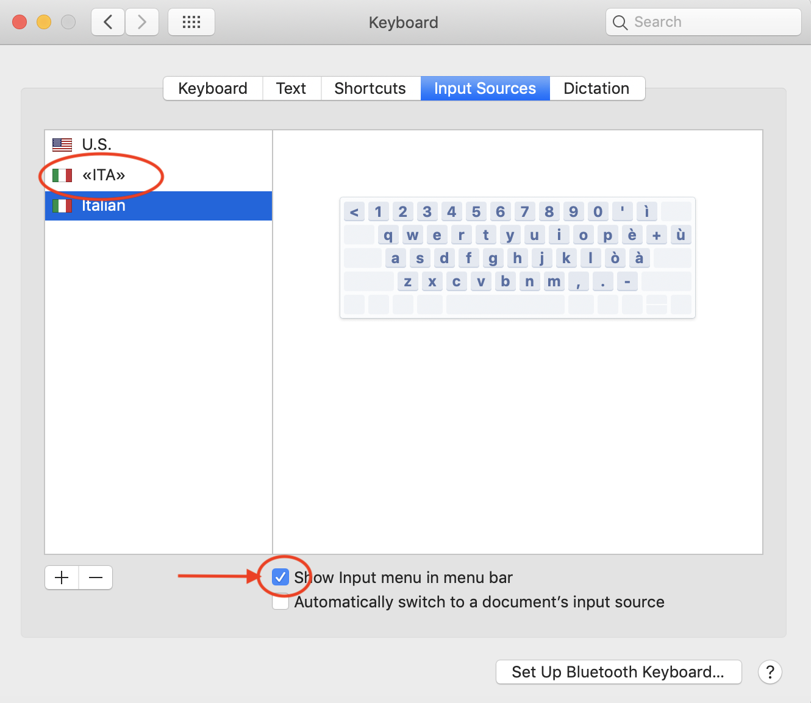
⌨️ Step 6: Usare la nuova tastiera
- Clicca sull’icona con la bandierina sulla barra dei menù.
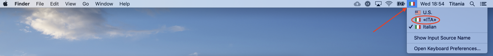
2. Seleziona la tua tastiera preferita. Ora puoi digitare le caporali direttamente dalla tua tastiera!